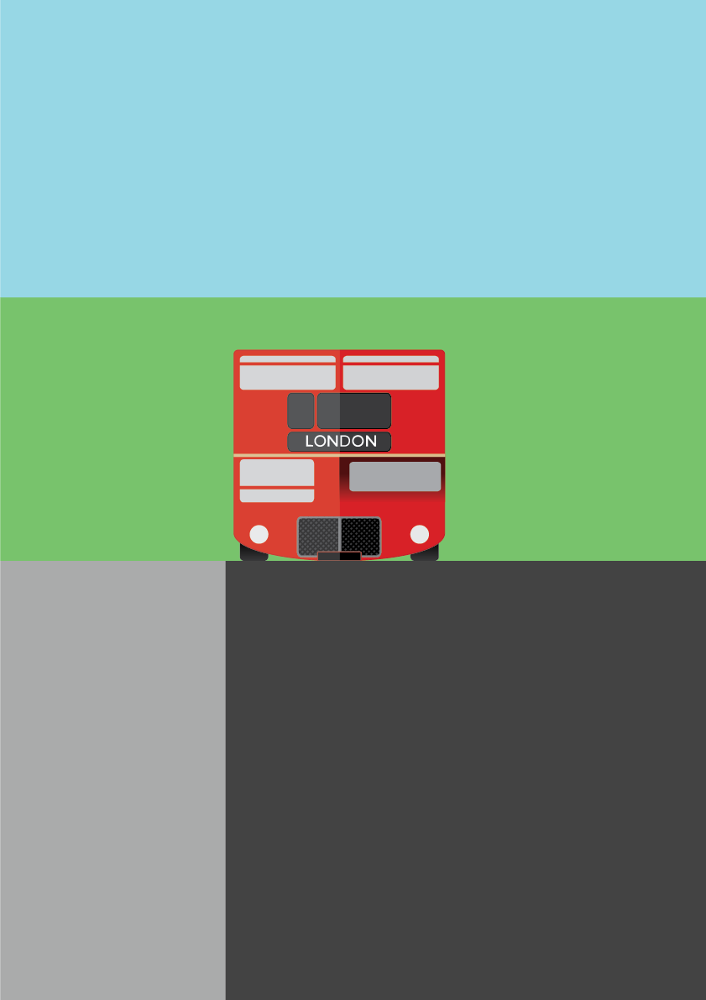
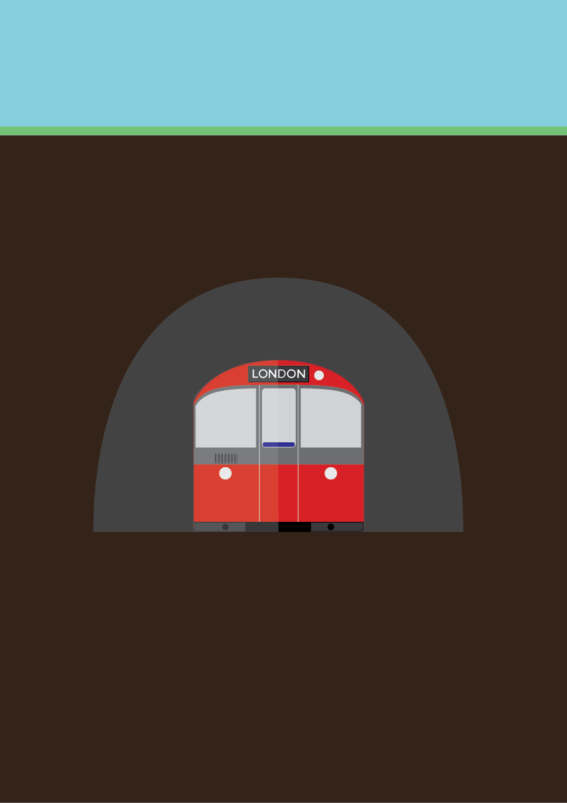
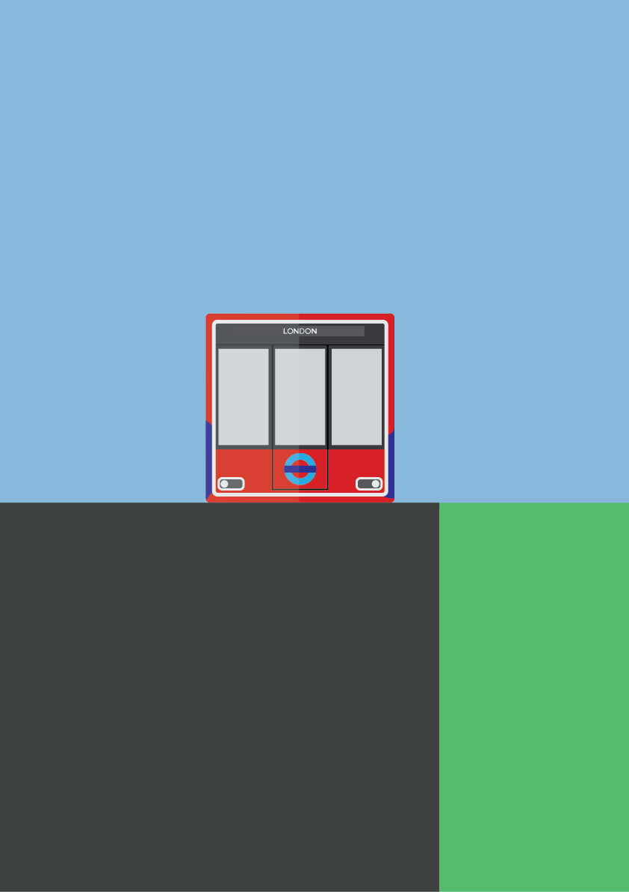
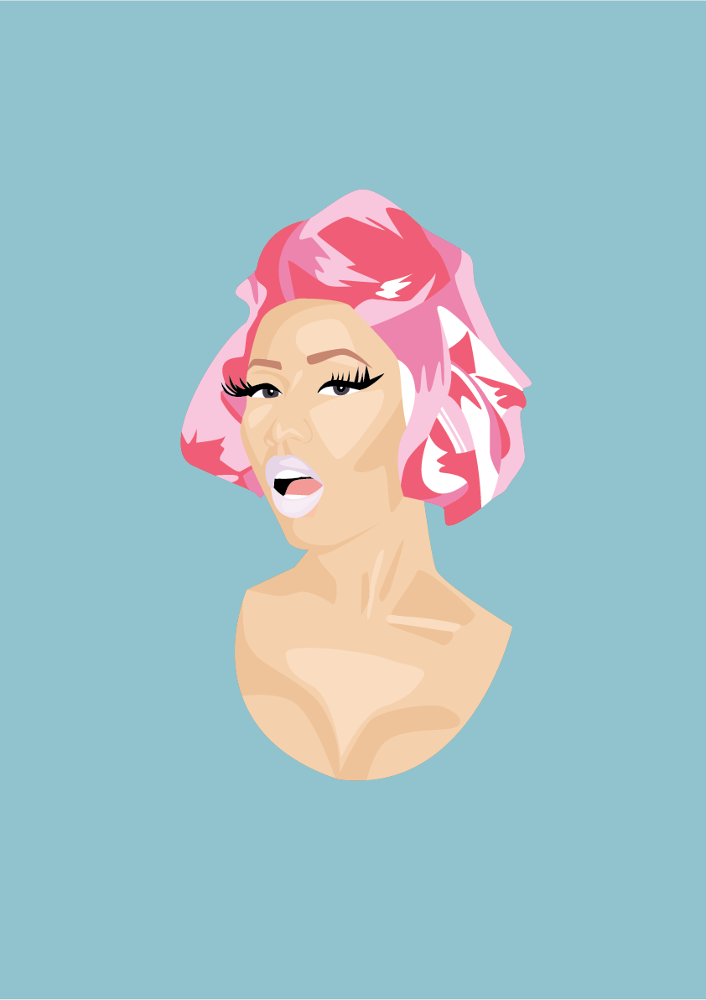
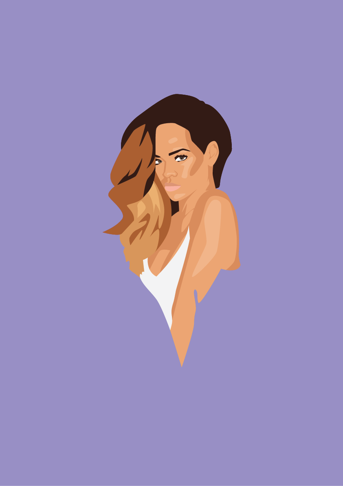
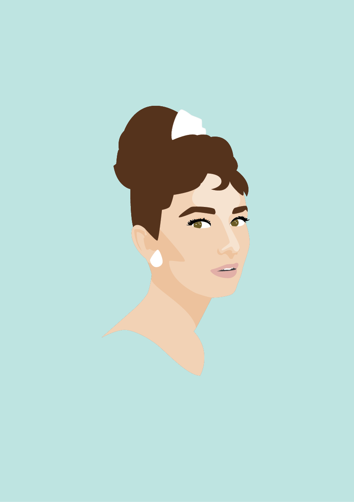
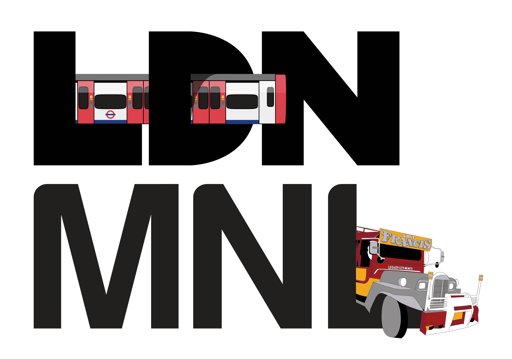

Personal
2015
These were experimental pieces whilst learning Adobe Illustrator. I was interested in fluid lines, simple designs and creating my own drawing style. I focused on travel and portrait subjects.





For these, I exclusively used the pen tool. When first making these, I did not add enough different shades to the picture which made it quite flat (see 3rd piece). As I went along, I was more confident adding tones and happier with my style in Illustrator.



For this final piece, I drew inspiration from where I live, London and where I am from, Manila. I found the car particularly hard to do because of all the intricate details involved that I decided to omit since it would not be in keeping with the simpler London Tube.
